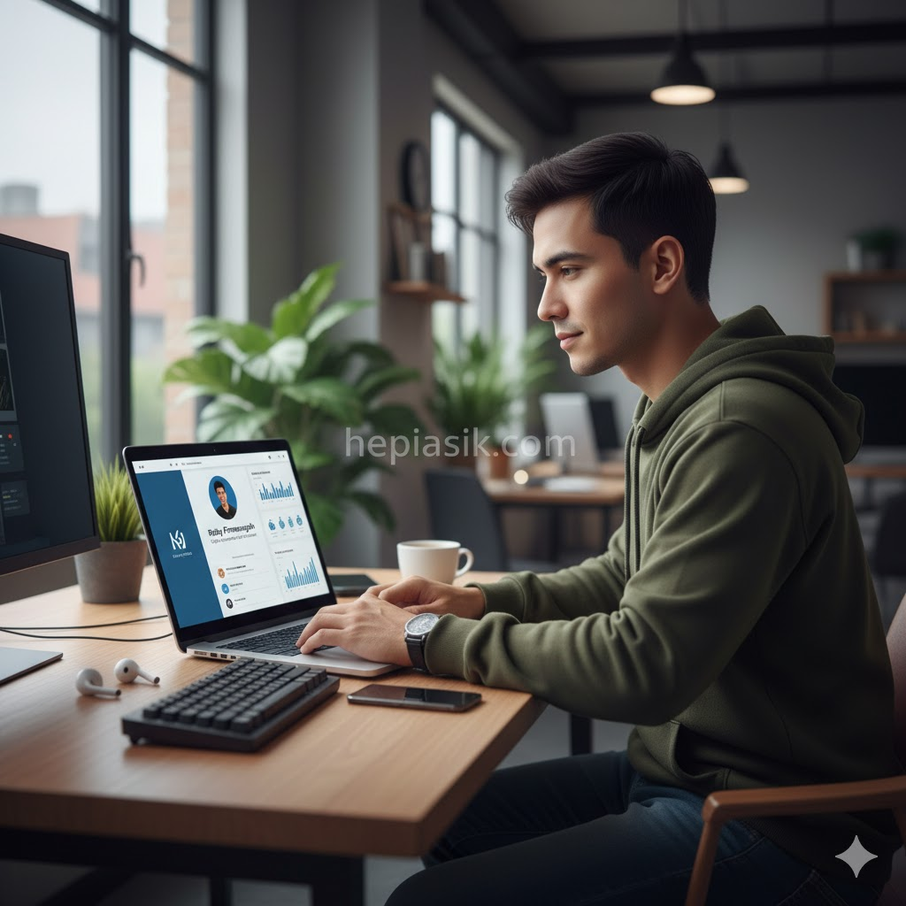
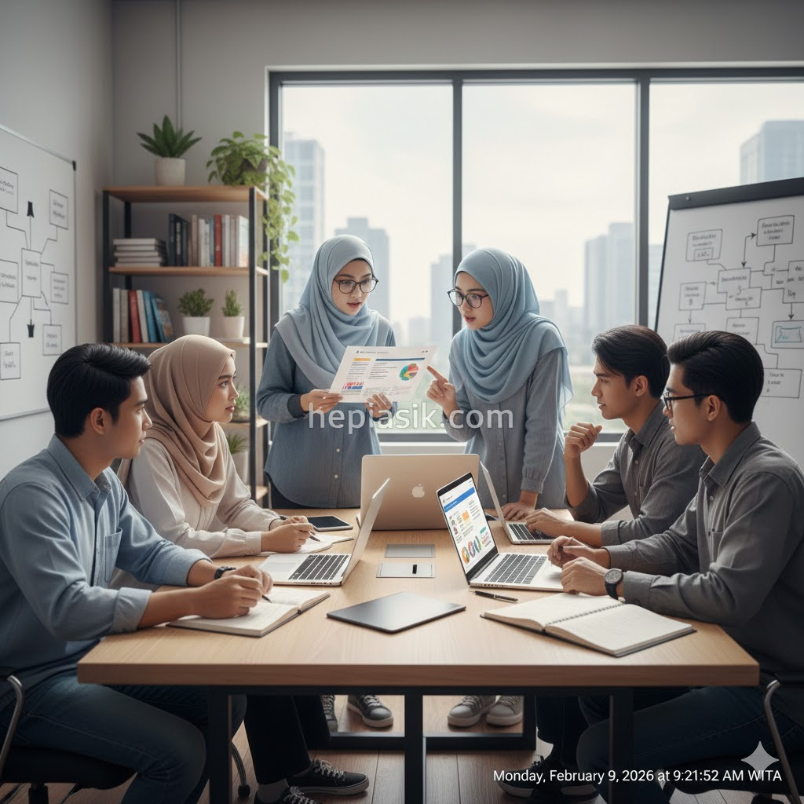

Strategi Membangun Personal Branding Lewat Konten di Era Karir Modern
Dalam lanskap ekonomi digital tahun 2026, personal branding bukan lagi sekadar pelengkap resume, melainkan mata uang utama dalam membangun kredibilitas profesional. Karir modern menuntut setiap individu untuk mampu mengomunikasikan nilai uniknya secara efektif melalui narasi digital yang konsisten. Keberhasilan dalam pasar kerja yang kompetitif saat ini sangat bergantung pada bagaimana seseorang mampu mengkurasi identitasnya secara strategis agar dapat ditemukan oleh peluang yang tepat sebelum mereka mencarinya.
Menurut riset dari LinkedIn Economic Graph (2026), profesional yang aktif membangun otoritas melalui konten memiliki peluang 3,5 kali lebih besar untuk mendapatkan tawaran pekerjaan pasif dibandingkan mereka yang hanya mengandalkan metode lamaran tradisional. Hal ini sejalan dengan konsep "reputasi sebagai aset" yang telah berkembang jauh melampaui deskripsi pekerjaan statis. Membangun personal branding karir modern membutuhkan integrasi antara autentisitas kepribadian dan penguasaan platform digital sebagai saluran distribusi pemikiran atau *thought leadership*.
Otoritas Digital Sebagai Fondasi Karir Masa Depan
Personal branding adalah janji nilai yang Anda berikan kepada audiens profesional Anda. Di era karir modern, otoritas dibangun melalui bukti karya yang terlihat secara publik. Seth Godin menekankan bahwa identitas profesional saat ini bukan tentang apa yang Anda katakan, melainkan tentang apa yang Anda lakukan secara konsisten. Ia menulis dalam karyanya:
"Branding adalah sekumpulan ekspektasi, memori, cerita, dan hubungan yang, jika digabungkan, menjelaskan keputusan konsumen untuk memilih satu produk atau layanan di atas yang lain" (Seth Godin, This is Marketing, 2018, hlm. 12).
Dalam konteks individu, konsumen tersebut adalah perekrut atau mitra bisnis. Dengan memproduksi konten yang relevan, Anda sedang membangun "ekspektasi" akan keahlian Anda di benak mereka bahkan sebelum interaksi pertama terjadi.
Insight penting: Konten adalah bukti sosial dari kompetensi Anda. Solusinya, mulailah mendokumentasikan proses belajar atau proyek yang Anda kerjakan sebagai bentuk transparansi profesional yang membangun kepercayaan audiens.
Strategi Konten Berbasis Nilai dan Konsistensi
Banyak profesional gagal membangun personal branding karir modern karena terlalu fokus pada hasil instan daripada proses jangka panjang. Kebiasaan kecil dalam berbagi satu wawasan setiap hari jauh lebih berdampak daripada satu kampanye besar yang sporadis. James Clear menjelaskan bagaimana perubahan kecil dalam sistem kita akan menentukan nasib kita. Ia menegaskan:
"Setiap tindakan yang Anda ambil adalah pemungutan suara untuk tipe orang yang Anda inginkan" (James Clear, Atomic Habits, 2018, hlm. 37).
Setiap konten yang Anda bagikan adalah suara untuk reputasi profesional Anda. Konsistensi dalam menyajikan nilai akan mengukuhkan posisi Anda sebagai ahli di bidang tersebut secara perlahan namun pasti.

Kesimpulannya, branding adalah maraton kognitif. Solusinya, tetapkan satu topik spesifik yang ingin Anda kuasai (niche) dan bagikan perspektif Anda secara rutin setidaknya dua kali seminggu untuk membangun memori kolektif di jaringan profesional Anda.
Deep Work: Memproduksi Konten Berkualitas Tinggi
Di tengah banjir informasi, hanya konten yang memiliki kedalaman yang mampu menarik perhatian. Cal Newport berpendapat bahwa kemampuan untuk bekerja secara mendalam dan menghasilkan nilai yang sulit ditiru adalah keterampilan langka di abad ini. Ia menyatakan:
"Kemampuan untuk melakukan pekerjaan mendalam semakin langka pada saat yang sama ketika hal itu menjadi semakin berharga dalam ekonomi kita" (Cal Newport, Deep Work, 2016, hlm. 14).
Membangun personal branding karir modern memerlukan konten yang tidak sekadar mengulang apa yang sudah ada. Anda butuh analisis mendalam, studi kasus orisinal, atau opini yang menantang status quo untuk benar-benar menonjol.
Insight bagi kreator konten profesional: Kualitas selalu mengalahkan kuantitas dalam hal membangun otoritas. Solusinya, alokasikan waktu khusus setiap minggu untuk riset mendalam dan penulisan artikel panjang yang menunjukkan kapasitas intelektual Anda secara utuh.
Kecerdasan Emosional dalam Membangun Koneksi Personal
Teknologi mungkin menghubungkan kita secara teknis, namun emosi adalah hal yang menghubungkan kita secara manusiawi. Daniel Goleman menekankan bahwa kecerdasan emosional sering kali lebih menentukan kesuksesan karir daripada IQ murni. Ia menulis:
"Dalam pekerjaan apa pun, kesuksesan tergantung pada kemampuan untuk memahami orang lain dan mengelola hubungan secara efektif" (Daniel Goleman, Emotional Intelligence, 1995, hlm. 112).
Personal branding karir modern yang efektif menyertakan sisi manusiawi; kegagalan, pembelajaran, dan empati. Konten yang terlalu "robotik" atau kaku justru akan menjauhkan audiens karena mereka tidak bisa menemukan keterhubungan emosional.
Branding yang kuat adalah branding yang memiliki jiwa. Solusinya, jangan takut untuk membagikan cerita di balik layar atau kesalahan yang pernah Anda buat, karena hal tersebut menunjukkan integritas dan kemauan untuk bertumbuh.
Autentisitas: Menjadi Diri Sendiri dalam Branding
Salah satu kesalahan terbesar dalam branding adalah mencoba menjadi orang lain. Erich Fromm berpendapat bahwa menjadi diri sendiri secara utuh adalah bentuk keberanian tertinggi. Ia menegaskan:
"Tugas utama manusia dalam hidup adalah untuk melahirkan dirinya sendiri, menjadi apa yang seharusnya ia capai secara potensial" (Erich Fromm, The Art of Loving, 1956, hlm. 25).
Dalam konteks personal branding karir modern, autentisitas berarti menyelaraskan apa yang Anda tampilkan secara online dengan nilai-nilai yang Anda pegang secara offline. Jika branding Anda adalah topeng, maka burnout hanya tinggal menunggu waktu.

Insight utama: Orang bisa merasakan kepalsuan dari kejauhan. Solusinya, gunakan gaya bahasa yang paling nyaman bagi Anda dan fokuslah pada keunggulan unik yang benar-benar Anda miliki daripada mengikuti tren yang tidak relevan.
Membangun Resiliensi Mental Terhadap Opini Publik
Saat Anda mulai menonjolkan diri, kritik tidak bisa dihindari. Angela Duckworth menjelaskan bahwa ketekunan (grit) adalah pilar kesuksesan jangka panjang. Ia menyatakan:
"Ketangguhan adalah tentang terus bergerak maju meskipun ada hambatan dan penilaian negatif dari luar" (Angela Duckworth, Grit, 2016, hlm. 72).
Membangun personal branding karir modern membutuhkan "kulit yang tebal" terhadap komentar negatif. Fokuslah pada dampak positif yang Anda berikan daripada validasi instan dalam bentuk angka interaksi yang semu.
Kesimpulannya, branding adalah proses filtrasi audiens. Solusinya, perlakukan kritik konstruktif sebagai data untuk perbaikan, dan abaikan kebisingan yang tidak mendukung tujuan jangka panjang Anda.
Kekuatan Narasi: Bercerita dengan Tujuan
Data mungkin memberikan informasi, namun cerita memberikan makna. Simon Sinek mengajarkan bahwa orang tidak membeli apa yang Anda lakukan, melainkan mengapa Anda melakukannya. Ia menulis:
"Segala sesuatu yang Anda katakan dan lakukan adalah komunikasi tentang siapa Anda" (Simon Sinek, Start with Why, 2009, hlm. 56).
Konten personal branding karir modern Anda harus menjawab pertanyaan "mengapa". Mengapa Anda memilih profesi ini? Mengapa solusi ini penting? Mengapa audiens harus peduli? Cerita yang didorong oleh tujuan (*purpose-driven*) memiliki daya pikat yang jauh lebih kuat daripada sekadar pamer prestasi.
Insight praktis: Gunakan struktur bercerita yang melibatkan konflik dan resolusi dalam setiap postingan Anda. Solusinya, mulai setiap konten dengan masalah yang nyata dihadapi audiens Anda, lalu tawarkan perspektif Anda sebagai solusinya.
Hubungan Sosial Sebagai Katalisator Reputasi
Personal branding tidak dibangun di ruang hampa. Hubungan yang kuat dengan orang lain akan mempercepat pertumbuhan reputasi Anda. Robert Waldinger menekankan pentingnya kualitas hubungan dalam menentukan kebahagiaan dan kesuksesan. Ia menyatakan:
"Hubungan yang baik melindungi tubuh dan otak kita dari tekanan hidup" (Robert Waldinger & Marc Schulz, The Good Life, 2023, hlm. 45).
Dalam branding, ini berarti berkolaborasi dengan profesional lain, memberikan komentar yang bermakna pada karya orang lain, dan membangun ekosistem saling mendukung. Reputasi Anda sering kali ditentukan oleh apa yang dikatakan orang lain tentang Anda saat Anda tidak ada di ruangan.
Branding adalah soal komunitas, bukan sekadar ego. Solusinya, alokasikan 15 menit setiap hari untuk berinteraksi dengan konten rekan sejawat atau mentor untuk membangun koneksi yang tulus.
Dopamin dan Manajemen Kehadiran Digital
Kita harus berhati-hati agar pengejaran branding tidak membuat kita terjebak dalam adiksi digital. Anna Lembke memperingatkan bahwa stimulasi berlebihan akan merusak keseimbangan mental kita. Ia menulis:
"Pengejaran dopamin yang konstan melalui validasi digital justru dapat menyebabkan kehampaan yang lebih dalam" (Anna Lembke, Dopamine Nation, 2021, hlm. 82).
Membangun personal branding karir modern harus dilakukan dengan penuh kesadaran. Jangan biarkan jumlah *likes* menentukan suasana hati Anda. Fokuslah pada kualitas percakapan dan hubungan profesional yang tercipta di balik angka-angka tersebut.
Insight kesimpulan: Branding adalah alat untuk karir, bukan tujuan hidup itu sendiri. Solusinya, tetapkan batasan waktu yang tegas dalam mengelola media sosial agar kesehatan mental Anda tetap terjaga di tengah upaya membangun reputasi.
Kerapian Narasi dan Estetik Digital
Tampilan visual dan struktur konten Anda juga mencerminkan profesionalisme. Alain de Botton berargumen bahwa keindahan dan keteraturan lingkungan fisik (dan digital) memberikan ketenangan batin. Ia menyatakan:
"Keteraturan visual membantu pikiran kita untuk merasa lebih fokus dan berwibawa" (Alain de Botton, The Architecture of Happiness, 2006, hlm. 102).
Gunakan format yang rapi dalam setiap publikasi Anda. Tulisan yang mudah dibaca, tipografi yang jelas, dan visual yang bersih akan meningkatkan persepsi otoritas Anda di mata audiens profesional.
Branding adalah soal kesan pertama yang konsisten. Solusinya, gunakan *template* desain yang konsisten untuk setiap konten Anda agar mudah dikenali dan memberikan kesan terorganisir.
Adaptabilitas: Menyelaraskan Branding dengan Perubahan Zaman
Karir modern sangat dinamis, dan branding Anda juga harus fleksibel. Tony Schwartz mengingatkan bahwa organisme yang sehat adalah yang mampu beradaptasi dengan ritme lingkungannya. Ia menekankan:
"Ketahanan bukan tentang menahan beban selamanya, melainkan tentang kemampuan untuk pulih dan menyesuaikan diri" (Tony Schwartz, The Way We're Working Isn't Working, 2010, hlm. 118).
Jangan takut untuk melakukan *pivoting* pada personal branding Anda jika minat atau industri Anda berubah. Branding Anda harus tumbuh bersama dengan perkembangan karir Anda.
Personal branding adalah entitas yang hidup. Solusinya, lakukan audit personal branding setiap enam bulan sekali untuk memastikan pesan yang Anda sampaikan masih relevan dengan tujuan karir masa depan Anda.